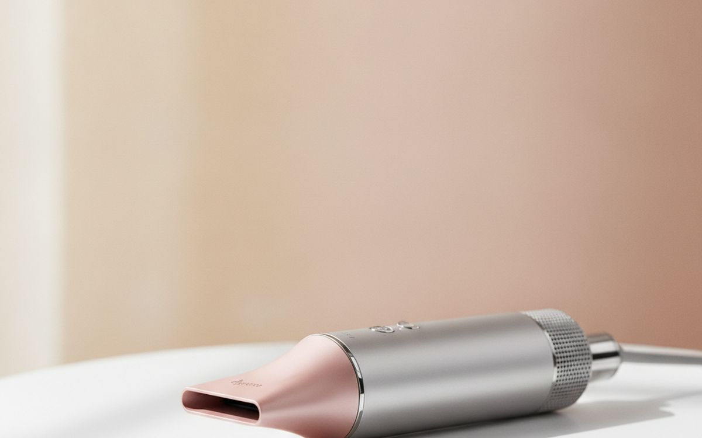
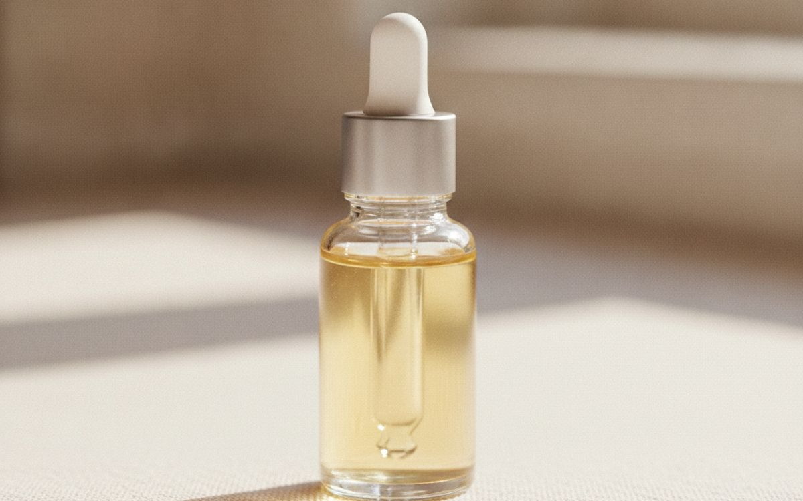
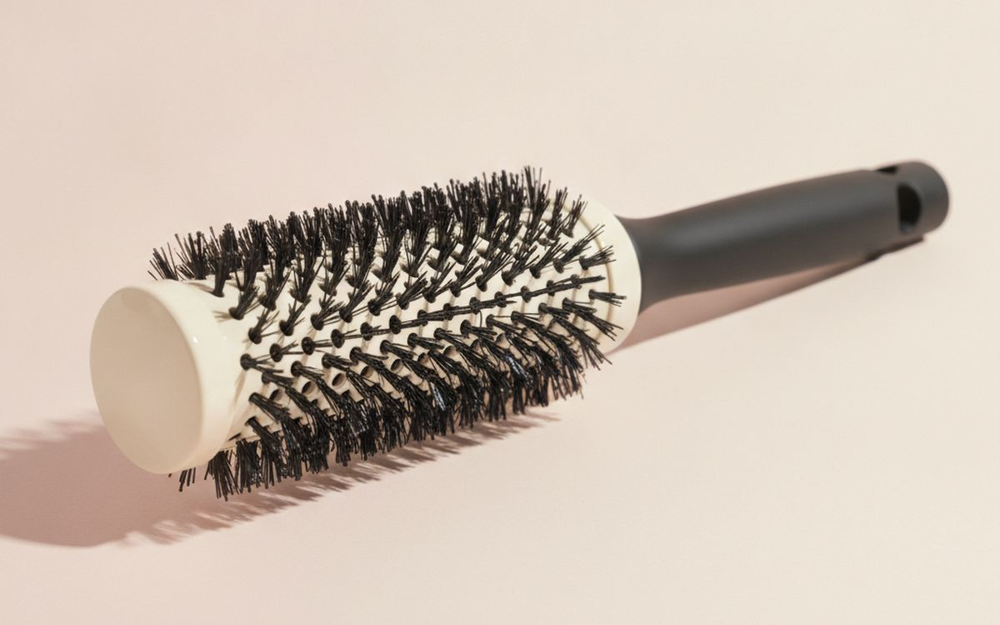
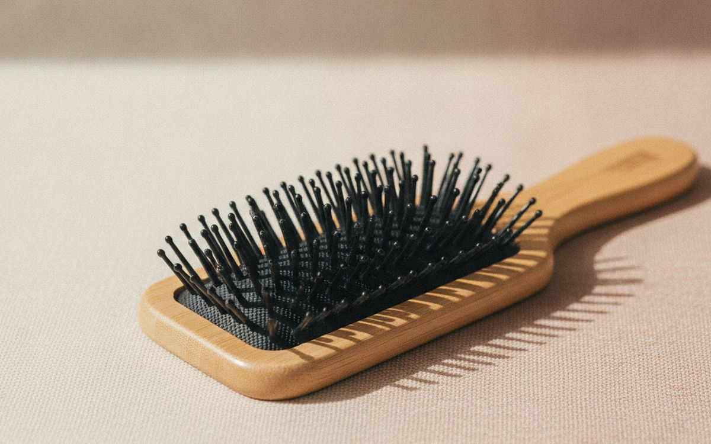
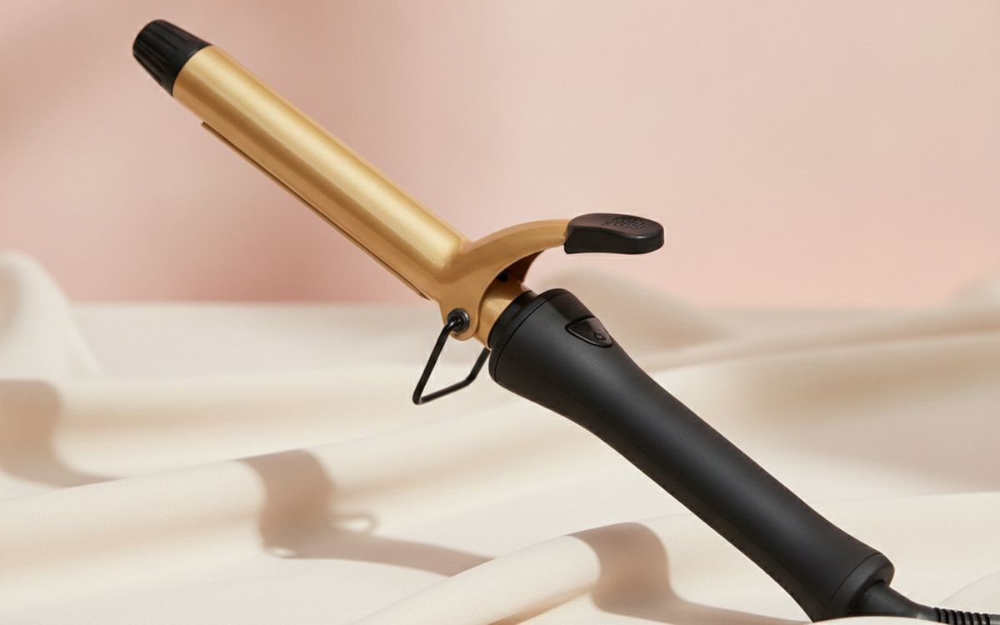
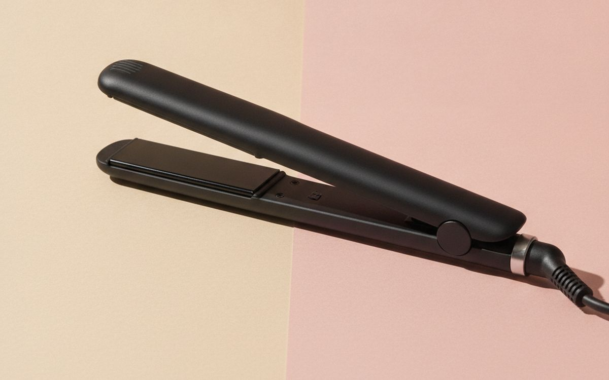
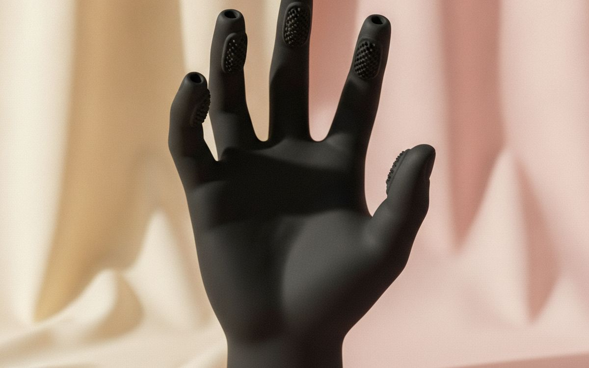
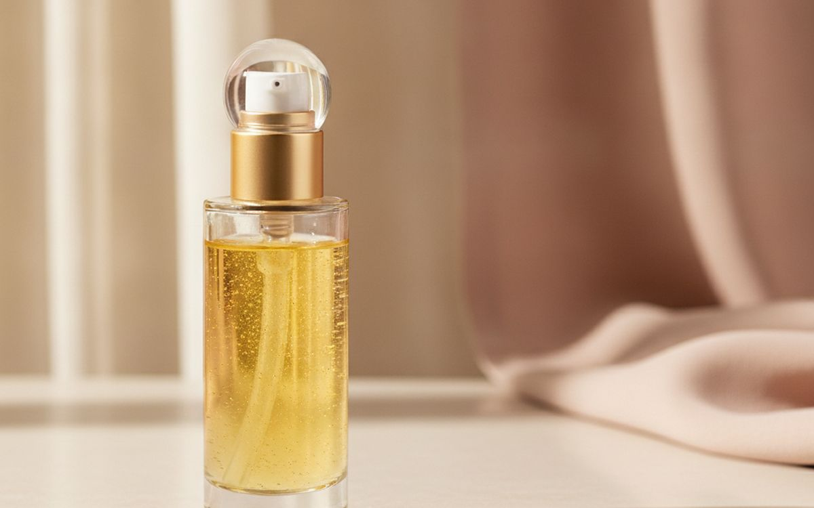
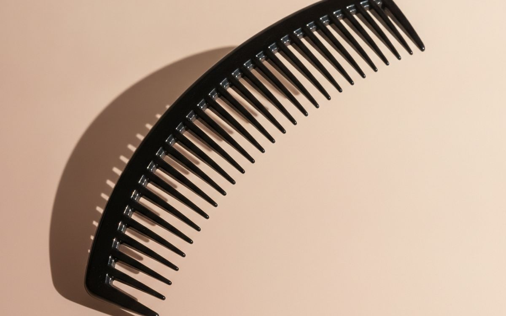
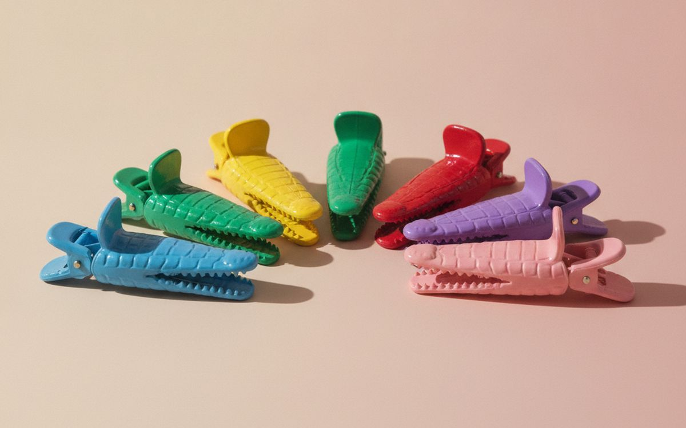

De nombreux produits de soins capillaires promettent trop. Nous démêlons le bruit pour identifier les outils et les protections qui valent la peine d'être considérés, et ce qu'il faut laisser de côté.
Le marché des soins capillaires regorge de produits déroutants et d'allégations exagérées. Il peut être difficile de distinguer ce qui aide réellement à gérer vos cheveux de ce qui n'est que du marketing coûteux. De nombreux articles sont vendus sur la promesse de "transformation" ou de "réparation", souvent sans preuves solides. Votre type de cheveux, votre texture et vos habitudes de coiffage sont uniques, ce qui signifie qu'une solution universelle existe rarement. Abordez les nouveaux achats avec un certain scepticisme, en particulier ceux qui promettent des résultats instantanés ou spectaculaires. Concentrez-vous sur les outils et les produits qui répondent à vos besoins spécifiques et à vos objectifs de santé capillaire, plutôt que de succomber à des assertions larges et non étayées.
Naviguer dans cette catégorie signifie comprendre les fonctions de base des outils et les bénéfices réels des produits de protection. Un bon sèche-cheveux ou une bonne brosse, par exemple, peut améliorer considérablement le coiffage quotidien sans nécessiter de fonctionnalités avancées. Les protecteurs de chaleur peuvent réduire les dommages, mais ce ne sont pas des boucliers magiques contre les températures extrêmes. Avant d'acheter, considérez le problème spécifique que vous essayez de résoudre. S'agit-il de frisottis, de cheveux emmêlés ou de dommages causés par la chaleur du coiffage ? Associer le produit au problème, plutôt que d'acheter dans le battage médiatique, permet d'économiser de l'argent et d'éviter la frustration.
Transparence. Les liens de cette page sont des liens affiliés. Si vous achetez via l’un d’eux, nous pouvons percevoir une commission sans surcoût pour vous. Cela n’influence ni le contenu de cette liste ni son ordre.
Comment nous avons choisi
Nos sélections sont basées sur des informations publiquement disponibles concernant la conception des produits, la science des matériaux et les expériences utilisateur courantes. Nous privilégions la fonctionnalité, la durabilité et un objectif clair. Aucun produit listé ici n'a été testé par nos soins. Notre objectif est de fournir un guide rationnel sur ce qui existe et ce qui est généralement considéré comme efficace pour son usage déclaré, en soulignant à la fois les avantages et les limitations connues. Nous visons à vous aider à prendre des décisions éclairées basées sur le bon sens et des considérations pratiques, et non sur la rhétorique marketing.
En un coup d’œil
| # | Produit | Idéal pour | Prix indicatif |
|---|
| 1 | Dyson Supersonic Hair Dryer | Séchage rapide, moins de dommages dus à la chaleur | $400-500 |
| 2 | Olaplex No. 7 Bonding Oil | Réduit les dommages dus à la chaleur, ajoute de la brillance | $25-35 |
| 3 | Olivia Garden Ceramic + Ion Thermal Round Brush | Ajoute du volume, crée des boucles | $20-35 |
| 4 | Aveda Wooden Paddle Brush | Démêle, lisse, masse le cuir chevelu | $30-45 |
| 5 | Hot Tools Professional 24K Gold Curling Iron | Boucles classiques, chaleur réglable | $50-70 |
| 6 | ghd Platinum+ Styler | Lisse, minimise les dommages dus à la chaleur | $250-300 |
| 7 | DevaCurl DevaFuser Universal Diffuser | Définit les boucles, réduit les frisottis | $30-40 |
| 8 | John Frieda Frizz Ease Extra Strength Serum | Contrôle les frisottis, ajoute de la brillance | $10-15 |
| 9 | Pattern Beauty Wide-Tooth Comb | Démêle en douceur, préserve les boucles | $10-15 |
| 10 | Framar Gator Grips Hair Clips | Maintient les cheveux fermement, sans marques | $10-15 |
Les prix sont indicatifs au moment de la rédaction et changent souvent.
Notre sélection

1
Séchage rapide, moins de dommages dus à la chaleurDyson Supersonic Hair Dryer
$400-500
Le Dyson Supersonic utilise un moteur numérique dans son manche, ce qui déplace l'équilibre du sèche-cheveux par rapport aux modèles traditionnels, le rendant moins lourd en haut. Il génère un jet d'air concentré pour un séchage plus rapide, visant à réduire le temps d'exposition des cheveux à la chaleur. L'appareil intègre un contrôle intelligent de la chaleur, mesurant la température de l'air 40 fois par seconde pour éviter les dommages dus à une chaleur excessive, ce qui peut être bénéfique pour la santé des cheveux à long terme. Bien qu'il sèche les cheveux rapidement, l'avantage principal est la constance et une conception moins encombrante, ce qui peut rendre les longues séances de coiffage plus confortables. Il est livré avec des embouts magnétiques faciles à changer, y compris un concentrateur pour un coiffage de précision et un diffuseur pour cheveux ondulés ou bouclés, offrant une polyvalence sans avoir besoin de les tordre ou de les enclencher. Pour une utilisation quotidienne, le bénéfice de vitesse est notable, potentiellement raccourcissant les routines matinales.
Pourquoi il est là
- Sèche les cheveux rapidement
- Équilibré, confortable à tenir
- Embouts magnétiques faciles à interchanger
Bon à savoir
- Prix très élevé
- Peut être bruyant à réglages élevés

2
Réduit les dommages dus à la chaleur, ajoute de la brillanceOlaplex No. 7 Bonding Oil
$25-35
L'huile Olaplex No. 7 Bonding Oil est une huile de coiffage concentrée et légère conçue pour offrir une protection contre la chaleur jusqu'à 450 °F (232 °C). Elle est commercialisée comme aidant à réparer les cheveux abîmés et à réduire les frisottis, rendant les cheveux plus lisses. L'ingrédient clé, le bis-aminopropyl diglycol dimaleate, est censé agir en reconstruisant les liaisons disulfures dans les cheveux, qui sont souvent rompues lors des services chimiques ou du coiffage à chaud. Bien que les preuves directes de "réparation des liaisons" par une huile topique en dehors des traitements professionnels soient limitées, le produit fournit certainement une barrière contre la chaleur lors du coiffage et peut améliorer l'apparence extérieure et la maniabilité des cheveux. Il vise également à ajouter de la brillance et de la douceur sans alourdir les cheveux, ce qui est une préoccupation courante avec les huiles capillaires, en particulier pour les mèches plus fines. Une petite quantité, généralement quelques gouttes seulement, est généralement suffisante pour la plupart des types de cheveux, appliquée avant le coiffage à chaud.
Pourquoi il est là
- Protège contre la chaleur élevée
- Ajoute une brillance notable
- Formule légère
Bon à savoir
- Petite bouteille pour le prix
- Les affirmations de "réparation des liaisons" peuvent être exagérées pour un usage domestique

3
Ajoute du volume, crée des bouclesOlivia Garden Ceramic + Ion Thermal Round Brush
$20-35
Une bonne brosse ronde est essentielle pour sécher les cheveux au sèche-cheveux avec du volume et créer des boucles douces ou des ondulations, en particulier si vous visez une finition digne d'un salon à la maison. La brosse ronde thermique Ceramic + Ion d'Olivia Garden est dotée d'un barillet revêtu de céramique qui chauffe pendant que vous séchez au sèche-cheveux, ce qui peut aider à fixer les styles plus rapidement et à obtenir une finition plus lisse en répartissant la chaleur uniformément. Les poils ioniques sont conçus pour réduire l'électricité statique et les frisottis, conduisant à des cheveux plus brillants et empêchant les mèches rebelles. Ces brosses existent en différents diamètres ; un barillet plus grand crée plus de volume et des ondulations plus lâches, tandis qu'un plus petit donne des boucles plus serrées et des plis plus définis. Choisir la bonne taille pour la longueur de vos cheveux et le style désiré est important pour obtenir les meilleurs résultats. Le manche ergonomique de la brosse est souvent noté pour son confort lors de séances de coiffage prolongées, prévenant la fatigue de la main, ce qui est une considération pratique pour une utilisation régulière.
Pourquoi il est là
- Crée du volume et de la douceur
- Réduit les frisottis avec des poils ioniques
- Large gamme de tailles disponibles
Bon à savoir
- Peut être difficile à utiliser pour les débutants
- Nécessite une technique de séchage spécifique

4
Démêle, lisse, masse le cuir cheveluAveda Wooden Paddle Brush
$30-45
La brosse plate en bois Aveda est un outil largement reconnu pour démêler et lisser les cheveux sans tirer excessivement. Sa base large et plate et ses poils espacés sont conçus pour glisser en douceur dans les cheveux, minimisant la casse et l'électricité statique, en particulier sur les cheveux longs ou épais qui ont tendance à s'emmêler facilement. Les poils ont généralement des extrémités arrondies, qui sont plus douces pour le cuir chevelu et peuvent offrir un léger effet massant, stimulant potentiellement la circulation sanguine. Cette brosse n'est pas principalement destinée à coiffer pour le volume ou les boucles, mais plutôt pour le brossage quotidien général, le démêlage des cheveux mouillés après le lavage, ou la création de looks lisses et droits lors du séchage au sèche-cheveux. Le manche en bois est solide et durable, offrant une prise confortable pendant l'utilisation. C'est un outil essentiel pour maintenir la santé et l'apparence de base des cheveux, ce qui en fait un incontournable fiable pour de nombreuses personnes à la recherche d'une gestion capillaire simple et efficace.
Pourquoi il est là
- Excellente pour démêler
- Réduit la casse et l'électricité statique
- Confortable pour le cuir chevelu
Bon à savoir
- Pas idéale pour coiffer le volume
- Peut être difficile à nettoyer en profondeur

5
Boucles classiques, chaleur réglableHot Tools Professional 24K Gold Curling Iron
$50-70
Le fer à friser Hot Tools Professional 24K Gold est un outil largement utilisé et souvent recommandé pour créer des boucles ou des ondulations classiques, offrant des performances constantes. Son barillet plaqué or 24 carats chauffe rapidement et maintient une chaleur constante sur toute la surface, ce qui est important pour des résultats de coiffage uniformes et pour éviter les points chauds qui peuvent endommager les cheveux. Il dispose de plusieurs réglages de chaleur, permettant aux utilisateurs de choisir la température appropriée pour leur type de cheveux, des fins aux épais, ce qui est un facteur clé pour minimiser les dommages dus à la chaleur. Cette gamme assure une polyvalence pour divers types de boucles et de textures de cheveux. Le support de sécurité intégré et le cordon pivotant extra-long ajoutent à sa praticité pour une utilisation régulière, le rendant moins encombrant pendant le coiffage. Bien qu'il puisse ne pas avoir les fonctionnalités avancées des modèles plus chers, il remplit de manière fiable sa fonction principale de boucler les cheveux efficacement et avec une bonne répartition de la chaleur.
Pourquoi il est là
- Chauffe rapidement et uniformément
- Plusieurs réglages de chaleur
- Construction durable
Bon à savoir
- Le placage or peut s'user avec le temps
- La pince peut laisser des plis si elle n'est pas utilisée avec soin

6
Lisse, minimise les dommages dus à la chaleurghd Platinum+ Styler
$250-300
Le ghd Platinum+ Styler est conçu pour lisser et boucler, utilisant une technologie prédictive pour maintenir une température de coiffage optimale de 365 °F (185 °C). Il n'offre pas de réglages de température réglables, car le fabricant affirme que cette température unique est idéale pour tous les types de cheveux afin d'obtenir des résultats sans dommages excessifs dus à la chaleur. Cette approche de température fixe est un élément clé de sa philosophie de conception, visant des résultats constants. Ses plaques en céramique sont usinées avec précision et conçues pour glisser en douceur dans les cheveux sans s'accrocher, ce qui contribue à minimiser les dommages physiques. La charnière en "V" aligne les plaques, offrant un meilleur contrôle et empêchant les cheveux de glisser pendant le coiffage, ce qui facilite la réalisation de passages lisses. Bien que la température fixe puisse être un inconvénient pour ceux qui préfèrent plus de contrôle de la chaleur pour les cheveux très tenaces ou épais, elle vise à prévenir la surchauffe accidentelle, qui est une cause fréquente de dommages. Il dispose également d'un mode veille automatique après 30 minutes d'inactivité pour la sécurité.
Pourquoi il est là
- Température de coiffage constante et optimale
- Plaques en céramique à glissement doux
- Polyvalent pour lisser et boucler
Bon à savoir
- La température fixe peut ne pas convenir à toutes les préférences
- Coût initial élevé

7
Définit les boucles, réduit les frisottisDevaCurl DevaFuser Universal Diffuser
$30-40
Un diffuseur est essentiel pour toute personne ayant les cheveux ondulés ou bouclés cherchant à améliorer leur motif naturel et à réduire les frisottis, offrant une méthode de séchage plus douce. Le DevaFuser de DevaCurl est un accessoire universel conçu pour s'adapter à la plupart des sèche-cheveux standard, ce qui en fait une option flexible pour divers modèles. Sa forme "main" unique et son flux d'air à 360 degrés sont destinés à sécher les boucles en douceur et uniformément, empêchant la perturbation qui peut entraîner des frisottis et préservant le motif naturel des boucles. Contrairement à la chaleur directe d'une buse de sèche-cheveux, un diffuseur répartit l'air et en réduit l'intensité, imitant le séchage à l'air mais avec une vitesse accrue. Cela aide à maintenir la définition des boucles, leur rebond et leur volume, donnant souvent aux cheveux une apparence plus pleine et moins frisottante. Bien qu'il ajoute du volume à votre sèche-cheveux et puisse prendre plus de temps que le séchage direct, les résultats pour améliorer la texture naturelle peuvent être significatifs pour beaucoup.
Pourquoi il est là
- Améliore le motif naturel des boucles
- Réduit les frisottis et l'électricité statique
- Ajustement universel pour la plupart des sèche-cheveux
Bon à savoir
- Augmente le temps de séchage
- Peut être encombrant à ranger

8
Contrôle les frisottis, ajoute de la brillanceJohn Frieda Frizz Ease Extra Strength Serum
$10-15
Le sérum Frizz Ease Extra Strength de John Frieda est un produit de longue date conçu pour combattre les frisottis, même en cas d'humidité élevée, et offrir un look soigné. Il agit en créant une barrière à la surface des cheveux, principalement à l'aide de silicones, qui lissent la cuticule capillaire et empêchent l'excès d'humidité de pénétrer et de faire gonfler les cheveux. Cela conduit à une finition plus lisse et plus brillante qui peut durer toute la journée. Contrairement à certaines huiles plus lourdes, ce sérum vise à fournir un look soigné sans rendre les cheveux gras ou alourdis, à condition qu'il soit utilisé avec parcimonie. Il est particulièrement utile pour les types de cheveux sujets aux frisottis dus aux facteurs environnementaux ou aux dommages causés par le coiffage. Bien qu'il ne "répare" pas les cheveux ni n'offre de protection contre la chaleur, il gère efficacement leur apparence et leur texture, les rendant plus faciles à coiffer. Une petite quantité, souvent juste une goutte de la taille d'un petit pois, est généralement suffisante pour des cheveux de longueur moyenne, appliquée sur cheveux humides ou secs.
Pourquoi il est là
- Très efficace pour contrôler les frisottis
- Ajoute une brillance significative
- Abordable et largement disponible
Bon à savoir
- Peut sembler lourd si trop est appliqué
- Contient des silicones, que certains préfèrent éviter

9
Démêle en douceur, préserve les bouclesPattern Beauty Wide-Tooth Comb
$10-15
Un peigne à dents larges, comme celui de Pattern Beauty, est un outil fondamental pour démêler les cheveux, en particulier pour les personnes ayant des textures bouclées, crépues ou épaisses. Ses dents espacées sont conçues pour séparer délicatement les mèches sans s'accrocher ni tirer, ce qui aide à minimiser la casse et à préserver les motifs naturels des boucles, les empêchant d'être étirés ou perturbés. L'utilisation d'un peigne à dents larges sur cheveux mouillés, souvent avec un après-shampoing réparti, est généralement recommandée plutôt qu'une brosse pour ces types de cheveux, car les cheveux mouillés sont plus fragiles et sujets aux dommages. Ce type de peigne fonctionne également bien pour répartir uniformément les produits dans les cheveux, de la racine aux pointes, sans aplatir le volume ni perturber la structure des boucles. C'est un article simple et peu technologique, mais son impact sur la santé des cheveux pour des textures spécifiques est considérable, prévenant les dommages que des peignes ou des brosses plus fins pourraient causer pendant le processus de démêlage.
Pourquoi il est là
- Doux sur les cheveux mouillés et bouclés
- Minimise la casse et les accrocs
- Préserve la définition des boucles
Bon à savoir
- Moins efficace pour coiffer les cheveux raides
- Peut être encombrant à transporter

10
Maintient les cheveux fermement, sans marquesFramar Gator Grips Hair Clips
$10-15
Les pinces de sectionnement, comme les Framar Gator Grips, sont des outils basiques mais inestimables pour quiconque coiffe ses cheveux, que ce soit pour le séchage au sèche-cheveux, le bouclage, le lissage ou l'application uniforme de produits. Ces pinces sont conçues avec un ressort solide et une large pince "bouche d'alligator" pour maintenir fermement même de grandes sections de cheveux sans glisser, ce qui est essentiel pour un travail précis. Un avantage clé est qu'elles présentent souvent une conception lisse et sans plis, ce qui signifie qu'elles ne laisseront pas de marques ou de bosses dans vos cheveux pendant qu'ils sèchent ou refroidissent, un problème courant avec les épingles à cheveux ordinaires ou les pinces moins robustes. Elles rendent le processus de coiffage plus organisé et efficace, garantissant que chaque section est travaillée de manière approfondie et cohérente sans se mélanger. Bien que cela puisse sembler mineur, investir dans de bonnes pinces de sectionnement simplifie toute routine de coiffage, prévenant la frustration et améliorant les résultats globaux.
Pourquoi il est là
- La prise solide maintient les cheveux épais
- Ne laisse pas de plis
- Durable pour une utilisation répétée
Bon à savoir
- Peut être encombrant dans de petites sections
- Ne convient pas à un usage décoratif
Questions fréquentes
Les sèche-cheveux chers font-ils une réelle différence, ou est-ce juste du marketing ?
Les sèche-cheveux plus chers intègrent souvent une technologie de moteur avancée et des capteurs de chaleur intelligents. Cela peut se traduire par des temps de séchage plus rapides et une répartition de la chaleur plus constante, ce qui peut réduire l'exposition globale de vos cheveux à la chaleur. Ils ont également tendance à être plus légers et plus silencieux, améliorant l'expérience utilisateur. Cependant, la fonction principale de séchage des cheveux est assurée par tous les sèche-cheveux. Pour une utilisation occasionnelle, un modèle de milieu de gamme suffit généralement. Le saut de prix important pour les sèche-cheveux haut de gamme achète souvent la commodité et une amélioration marginale de l'efficacité ou du contrôle de la chaleur, pas un résultat fondamentalement différent pour tout le monde. Considérez la fréquence d'utilisation et vos préoccupations capillaires spécifiques.
La "protection contre la chaleur" est-elle vraiment efficace, ou devrais-je simplement éviter la chaleur ?
Les produits de protection contre la chaleur sont conçus pour créer une barrière entre vos cheveux et les outils de coiffage, ce qui peut aider à réduire les dommages directs causés par la chaleur. Ils contiennent généralement des ingrédients qui ralentissent le transfert de chaleur ou forment une couche protectrice. Bien qu'ils ne soient pas un bouclier complet contre tous les dommages, l'utilisation d'un protecteur de chaleur peut certainement atténuer certains des effets négatifs des températures élevées, tels que la sécheresse et la casse. Cependant, aucun produit ne peut annuler complètement l'impact d'une chaleur excessive ou d'une technique inappropriée. Réduire la fréquence du coiffage à chaud ou utiliser des températures plus basses reste le moyen le plus efficace de minimiser les dommages, mais un bon protecteur offre une couche de défense importante.
Mes cheveux s'emmêlent beaucoup. Devrais-je utiliser une brosse ou un peigne ?
Pour démêler, le type d'outil dépend de l'état et de la texture de vos cheveux. Généralement, un peigne à dents larges est recommandé pour démêler les cheveux mouillés, surtout s'ils sont bouclés, crépus ou sujets à la casse. Les cheveux mouillés sont plus fragiles, et l'espacement plus large des dents du peigne réduit les accrocs et les tiraillements. Pour les cheveux secs, ou pour lisser après le démêlage, une brosse plate avec des poils flexibles peut être efficace. Évitez les brosses avec des poils rigides et serrés sur les cheveux mouillés emmêlés, car cela peut causer une casse importante. Travaillez toujours des pointes vers les racines pour minimiser le stress et éviter que les nœuds ne se resserrent.
Les brosses lisseurs pour cheveux sont-elles bonnes, ou devrais-je m'en tenir au fer plat ?
Les brosses lisseurs visent à combiner le brossage et le lissage, offrant un moyen plus rapide de lisser les cheveux par rapport à un fer plat traditionnel. Elles fonctionnent en chauffant des poils qui traversent les cheveux. Bien qu'elles puissent réduire efficacement les frisottis et ajouter un certain lissage, elles n'atteignent généralement pas le même niveau de lissage parfait qu'un fer plat, qui pince les cheveux entre deux plaques chaudes. Les brosses lisseurs fonctionnent souvent mieux pour les retouches ou pour ceux qui recherchent un look lisse moins sévère. Si vous désirez des cheveux très lisses et durables, un fer plat est généralement plus efficace. Pour un lissage rapide et décontracté, la brosse peut suffire.
← Tous les guides
Nous avons déposé une candidature au Programme Partenaires d'Amazon. Nous ne sommes pas encore Partenaire Amazon et ne percevons rien sur les liens Amazon à ce jour. Les prix et la disponibilité sont exacts à la date de publication et peuvent changer.